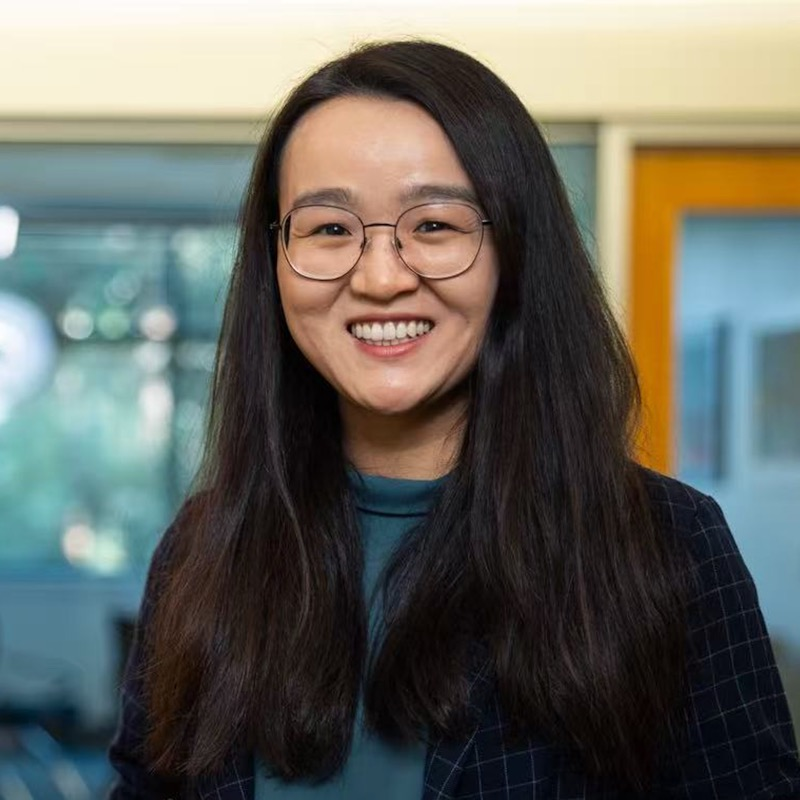

Diyi Yang
Assistant Professor, Computer Science Department, Stanford University
Title: TBD
Diyi Yang is an assistant professor in the Computer Science Department at Stanford University, also affiliated with the Stanford NLP Group, Stanford HCI Group and Stanford Human Centered AI Institute. Her research focuses on human-centered natural language processing and human-AI interaction. She is a recipient of IEEE “AI 10 to Watch” (2020), Microsoft Research Faculty Fellowship (2021), NSF CAREER Award (2022), an ONR Young Investigator Award (2023), and a Sloan Research Fellowship (2024). Her work has received multiple paper awards or nominations at top NLP and HCI conferences.